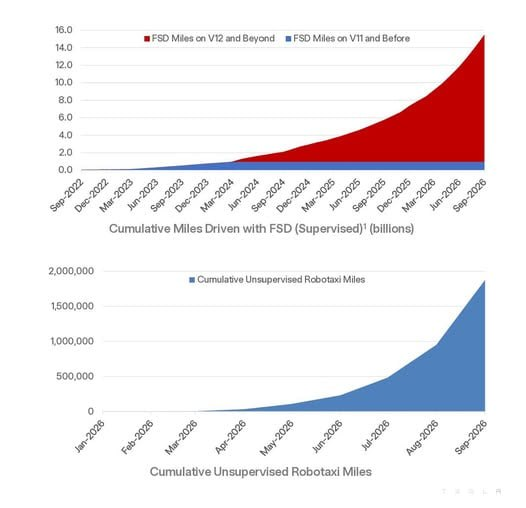

過去 26 小時共 2 則貼文，都在 10/22 11:05 發出，主題是 Tesla 2026 年第三季財報與電話會議的重點整理，第二則是 Tesla 財報簡報中 FSD 與 Robotaxi 累積里程的圖表。沒有集數推播或業配。
#6501 原文
tesla 26q3 FSD+機器人的實踐之路開始展開，FSD 可以靠大量車隊累積資料越弄越好，機器人沒辦法。所以公司會先自辦機器人工廠讓他們在裡面累積資料
- 汽車毛利率（ex 碳權）由 16.3% 升至 18.1%，主因 APAC 交車占比提高。原物料上漲與利率變化是成本逆風，透過調整融資方案部分抵銷
- 服務及其他毛利率由 14.1% 升至 15.9% 創新高，動能來自超充、保險等多項業務
- 未來幾年 capex 持續擴大，用途包含 Robotaxi 車隊、Optimus 產能、太陽能製造、AI 算力、半導體晶圓廠
- 北美 Q3 逾 75% 交車在交付時即簽 FSD 訂閱，較 Q2 高 20%。全球付費用戶超過 170 萬，訂閱占比首度達 50%
- 歐洲已獲多國核准，中國核准進度困難
- 其他車廠若聯手 NVIDIA、Qualcomm 推出 L2+ 產品，公司認為容易做出好看的 demo，長尾問題極難，要達到數百萬英里無傷害的安全水準更難
- 無監督自駕里程呈指數成長，季內累計里程成長 8 倍，每週維持雙位數成長
- Cybercab 零件數比以往任何車款少 50%，製造團隊認為是最容易放量的產品
- Optimus Fremont 高產量線已進入早期生產，年產百萬台單線設備大部分到位，但達到週產 2 萬台的年化速率預計至少還要一年或更久，因設計仍在變動
- 機器人應用會以工業優先，鎖定危險、重複性、24/7 運作的任務；家用是後續規模化之後的事。
- 手部是最難的機電部位，比移動系統致動器複雜
- AI5 晶片預計明年 4 月左右量產導入 Optimus
- Austin 研究用晶圓廠進展快，明年上半年開始設備裝機調試，5-6 月左右嘗試做出第一片測試晶片，目標 2028 年 Q3 量產
- 半導體設備目前不太影響 capex，2028 年達到數百億美元量級
#6502 原文（無文字，只有圖片）

Tesla 財報簡報的兩張圖：上圖是 FSD（Supervised）累積行駛里程，2026 年 9 月已約 155 億英里，幾乎全由 V12 之後的版本（端到端神經網路）貢獻；下圖是無監督 Robotaxi 累積里程，2026 年 3 月起從零開始，9 月接近 190 萬英里，曲線明顯加速。
講解
大盤數字（貼文沒提的部分）：Q3 營收 280.5 億美元，與去年持平、符合預期；Non-GAAP EPS 0.48 美元略優於預期，但 GAAP 淨利 7.87 億美元年減 43%，營業利益年減 56%、營業利益率只剩 2.6%，因研發費用年增 69%（AI、Optimus）。交車 48.65 萬輛年減 2%。換句話說，股癌摘的是「毛利改善與未來佈局」，但獲利本身其實是被大量前期投入壓縮的，這是解讀時要放在一起看的背景。
毛利率：「ex 碳權」是排除賣給其他車廠的法規積分收入，比較能反映賣車本業。18.1% 與貼文一致（Q2 為 16.3%），但仍低於 Q1 的 19.2%。碳權收入本季年減 73% 至 1.13 億美元，之後很難再回來，所以本業毛利是更關鍵的指標。另外 Electrek 指出平均售價持續下滑，對一家自稱受電池供應限制的車廠來說不尋常。
FSD 滲透率：北美逾 75% 新車交付時就付費簽 FSD，CFO 說「比 Q2 高約 20%」，但沒講清楚是 20 個百分點還是相對成長 20%，貼文直接寫「較 Q2 高 20%」略有簡化。全球 174 萬付費用戶要注意定義：這個數字包含一次買斷用戶，也是馬斯克 2025 年薪酬方案裡的 KPI 口徑，所以公司有誘因把它做大。訂閱占比首度過半的意義在於轉成經常性收入（分析師估年化約 10 億美元，公司表示大致正確），未來會揭露營收與流失率。
法規：歐洲已在 9 國核准，馬斯克希望數月內取得 EU 整體核准，12 月可能有投票，但時程由監管機關決定。中國方面，會議上 CFO 說法是「持續與監管單位積極溝通」，「困難」是股癌的詮釋。
競爭者：我在可取得的逐字稿摘要中沒找到明確點名 NVIDIA、Qualcomm 的段落（可能在未讀到的部分），可查到的是 Tesla 主管說其他中國車廠沒有這種技術領先、「幾年內沒人追得上」。L2+ 指仍需駕駛監督的進階輔助駕駛；所謂「長尾問題」是罕見但致命的路況，demo 只要跑順常見情境，真正的難度在把事故率壓到數百萬英里一次以下——這是 Tesla 一貫的論點，屬於公司自評。
Robotaxi 與 Cybercab：「累計無監督里程一季成長 8 倍」與逐字稿一致，對應 #6502 下圖。但起點很低，190 萬英里相對於監督式 FSD 的 155 億英里仍極小，指數成長主要反映車隊從零開始擴張。Cybercab 少 50% 零件是製造主管 Lars Moravy 說的，零件少代表組裝工序少、故障點少，有利放量；目前 Austin 已有 300 多輛，下月擴到 Dallas。公司也預計 2027 年 Q2 左右在部分美國地區的客戶車上開放無監督 FSD，初期可能只限高速公路。
Optimus：這是貼文開頭那句的核心：自駕可以靠數百萬輛客戶車免費收集資料，人形機器人沒有這種現成車隊，所以 Tesla 得先在自家工廠部署機器人來「養資料」。Fremont 產線設計產能約年產百萬台，但達到週產 2 萬台至少要一年，原因是設計還在改，尤其是手部（工程主管與馬斯克都說主要卡在手）。對外交貨目標約明年底，先從工業客戶開始。這些都是馬斯克的前瞻預估，歷史上 Tesla 的時程常常延後。
自製晶片：AI5 是 Tesla 下一代自研 AI 推論晶片，據報上月已在三星德州廠試產，預計 2027 年 4 月左右導入 Optimus。晶圓廠（Terafab）明年上半年裝機、5–6 月出第一片測試晶片、2028 年 Q3 有效量產。設備支出到 2028 年初「不會少於數百億美元」，長期可能超過 1,000 億美元，Tesla 與 SpaceX 的分攤尚未定案——貼文的「數百億美元量級」正確，但沒提長期上看千億與分攤未定。
Capex 的出入：貼文說未來幾年 capex 持續擴大，方向正確，但今年的數字其實是下修：CFO 在電話會議上把 2026 年資本支出指引調整為約 200 億美元（先前為「超過 250 億美元」），前三季已花 130 億。另外公司取得最高 300 億美元的借款額度，今年不打算動用；Q3 自由現金流約 15 億美元，手上現金與投資逾 450 億美元。
總結：貼文的數字與逐字稿大致吻合，主要差異是：FSD「高 20%」口徑不明、174 萬用戶含買斷、今年 capex 實際是下修、中國「困難」屬詮釋，以及沒提到獲利大幅下滑。財報公布後股價盤後下跌。